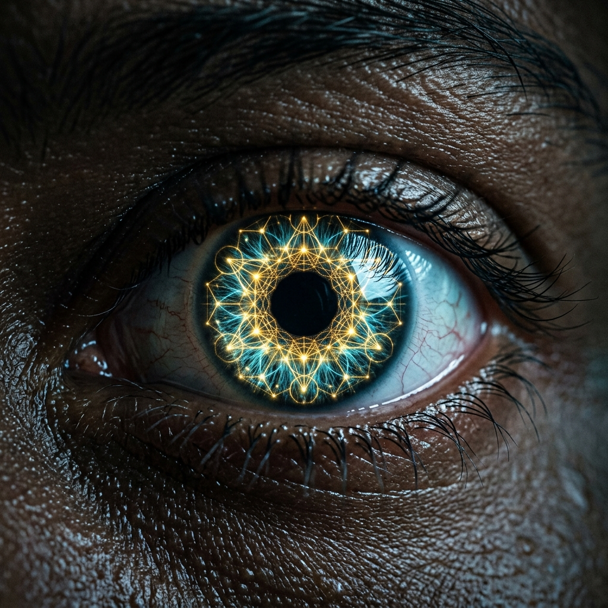
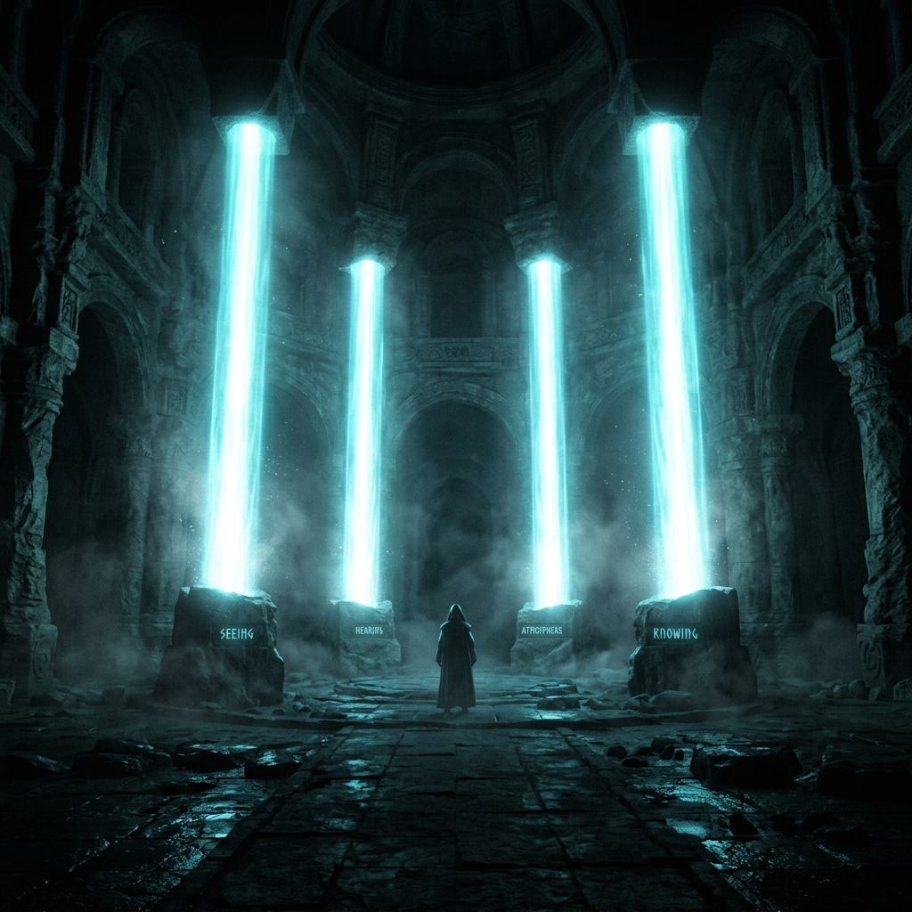
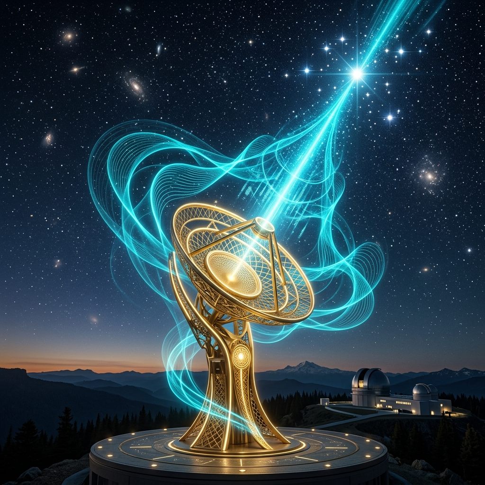

Masterclass Module
SPIRITUAL SENSITIVITY
Navigating the Realm That Governs Reality
The physical world is not the primary world. It is the downstream one. Everything you can see is an output.
🔑 The Inciting Thesis
"Most believers live their entire lives reacting to the output without ever learning to navigate the system that produces it...
They confront symptoms without addressing sources."
⏳ The Lagging Indicator (SIMULATION)
A physical manifestation (illness, financial loss, relationship failure) is almost never a sudden event. It is a lagging indicator. It was established in the realm of the spirit first.
INTERCESSION TIMELINE
A threat has entered your spiritual atmosphere. Defeat it before it crosses into physical manifestation.
🧭 The Two Instruments
Spiritual senses do not operate autonomously. They must be governed, checked, and calibrated by two unimpeachable instruments.
THE SPIRIT OF GOD
The specific agent of perception. The Holy Spirit guides into all truth and tells things to come, bypassing natural intelligence.
THE WORD OF GOD
Perception not anchored in the Word is unaccountable. The Word is the safeguard, ensuring what is perceived is tested and aligned with God's will.
👁 Four Dimensions of Perception

📻 The Frequency Tuner (SIMULATION)
Of everything that develops the sensory system, one practice is primary: Praying in the Spirit (Tongues).
Think of a receiver that is switched off. The signal is broadcasting, but you have heavy static. Tongues tune the antenna, bypassing human filtering entirely.

THE INNER RECEIVER
[MYSTERY DECODED]
🛡 The Four Development Protocols
1. The Altar of Prayer: Consistent, daily time praying in the Spirit to actively tune the antenna.
2. Sensitivity Training: Asking the Holy Spirit questions during ordinary activity, paired with fasting to quiet the noise of the physical body.
3. Atmosphere Management: Guarding your associations. Evil company creates signal interference and muffles sensitivity.
4. Biblical Mastery: Testing every perception against the objective standard of the Word.
🌐 The Rebuilt Architecture
ANTENNA ACTIVATED
"I refuse to live reacting to lagging physical indicators. I activate my spiritual perception. I choose to intercede upstream, guided by the precise intelligence of the Spirit and grounded in the authority of the Word."